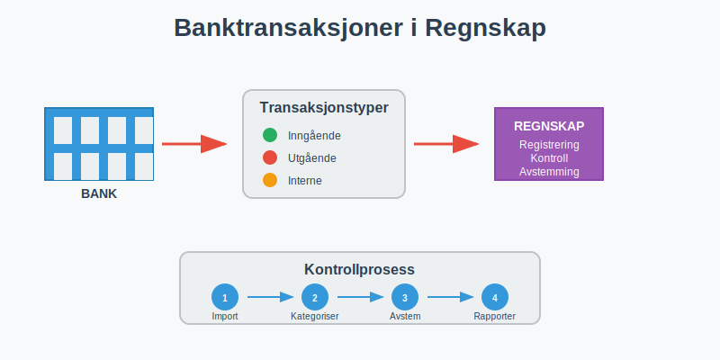
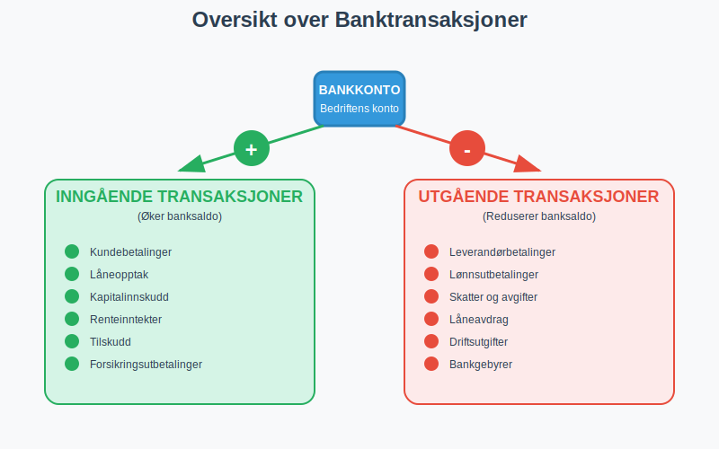
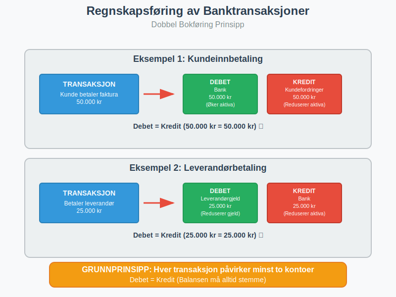
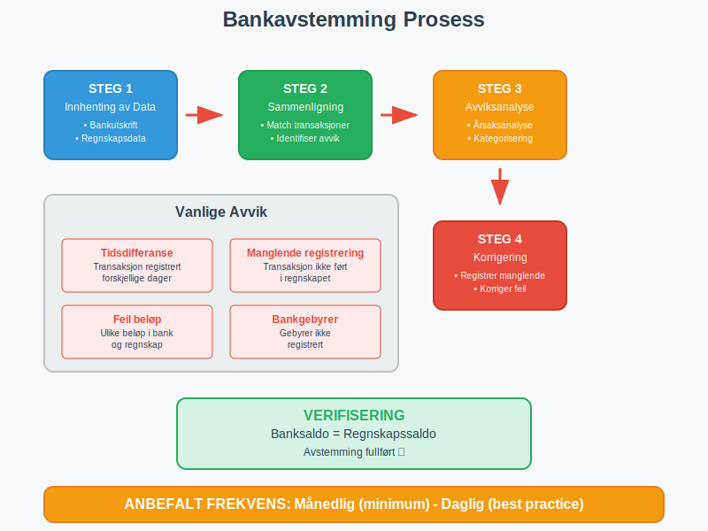
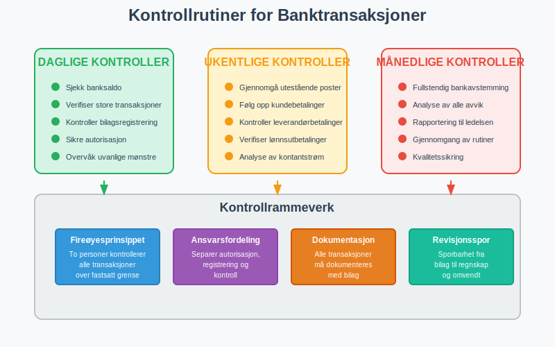
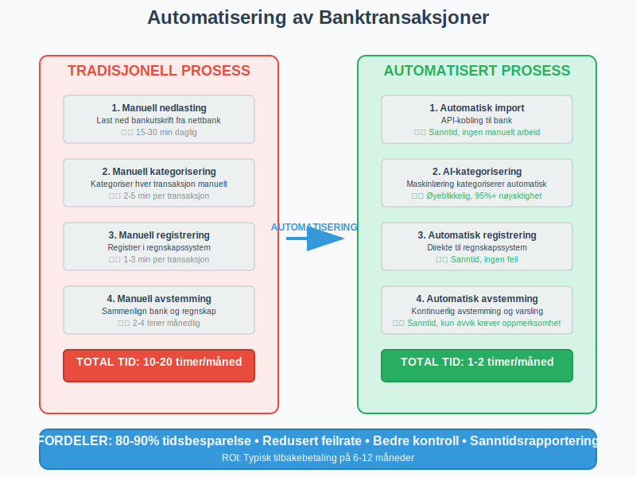
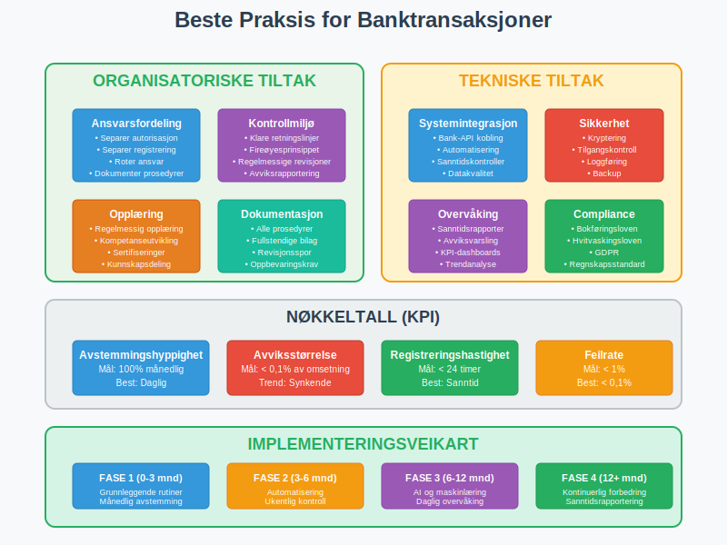

Banktransaksjoner er alle finansielle bevegelser som skjer gjennom bedriftens bankkontoer. Korrekt håndtering av banktransaksjoner er grunnleggende for nøyaktig regnskap og sikrer at alle inn- og utbetalinger blir riktig registrert og kontrollert.
Les mer om Bedriftsbank for en helhetlig oversikt over bedriftens konto- og betalingstjenester.
Se også Hva er Bedriftskonto? for forståelse av bedriftens kontoer i daglig drift.

Hva er Banktransaksjoner?
Banktransaksjoner omfatter alle finansielle bevegelser som påvirker bedriftens bankkontoer. Dette inkluderer både inngående og utgående betalinger som må registreres korrekt i regnskapet for å sikre:
- Nøyaktig kontantstrøm og likviditetsoversikt
- Korrekt regnskapsføring av alle finansielle hendelser
- Effektiv bankavstemming og kontroll
- Sporbarhet av alle finansielle transaksjoner
- Overholdelse av regnskapsloven og bokføringskrav
Betydning for Regnskapet
Banktransaksjoner påvirker direkte bedriftens balanse og resultatregnskap:
- Bankinnskudd øker aktiva (kontanter og bankinnskudd)
- Bankutbetalinger reduserer aktiva og kan påvirke kostnader eller gjeld
- Rentetransaksjoner påvirker finanskostnader eller finansinntekter
- Gebyrer registreres som driftskostnader
Typer Banktransaksjoner

Inngående Transaksjoner
Inngående transaksjoner øker bankbalansen og inkluderer:
Kundebetalinger
- Fakturabetalinger fra kunder
- Kontantbetalinger ved salg
- Forskuddsbetalinger fra kunder
- Avtalegiro og automatiske innbetalinger
Finansieringstransaksjoner
- Låneopptak fra banker eller andre långivere
- Kapitalinnskudd fra eiere eller investorer
- Tilskudd fra offentlige myndigheter
- Forsikringsutbetalinger ved skader
Andre Inntekter
- Renteinntekter på bankinnskudd
- Utbytte fra investeringer
- Salg av anleggsmidler
- Refusjoner og tilbakebetalinger
Utgående Transaksjoner
Utgående transaksjoner reduserer bankbalansen og inkluderer:
Leverandørbetalinger
- Fakturabetalinger til leverandører via direkte remittering
- Lønnsutbetalinger til ansatte
- Arbeidsgiveravgift og andre avgifter
- Forskuddsbetalinger til leverandører
Driftsutgifter
- Husleie og lokalkostnader
- Strøm, vann og oppvarming
- Forsikringspremier
- Kontorrekvisita og driftsmidler
Finansielle Forpliktelser
- Låneavdrag og rentebetaling
- Bankgebyrer og transaksjonsavgifter
- Skatter og avgifter
- Utbytte til eiere
Regnskapsføring av Banktransaksjoner
Grunnleggende Prinsipper
Regnskapsføring av banktransaksjoner følger dobbel bokføring hvor hver transaksjon påvirker minst to kontoer:

Eksempel: Kundeinnbetaling
Debet: Bank 50.000 kr
Kredit: Kundefordringer 50.000 kr
Eksempel: Leverandørbetaling
Debet: Leverandørgjeld 25.000 kr
Kredit: Bank 25.000 kr
Kontoplaner for Banktransaksjoner
| Kontotype | Kontonummer | Beskrivelse | Debet/Kredit |
|---|---|---|---|
| Bank | 1900-1999 | Bankinnskudd og kontanter | Debet øker |
| Kundefordringer | 1500-1599 | Utestående kundefakturaer | Debet øker |
| Leverandørgjeld | 2400-2499 | Skyldig til leverandører | Kredit øker |
| Lønnsgjeld | 2700-2799 | Skyldig lønn og feriepenger | Kredit øker |
| Avgiftsgjeld | 2600-2699 | MVA og andre avgifter | Kredit øker |
Timing og Periodisering
Kontantprinsippet vs. Opptjeningsprinsippet:
- Kontantprinsippet: Registrering når betaling skjer
- Opptjeningsprinsippet: Registrering når transaksjonen oppstår
For banktransaksjoner må begge prinsipper koordineres:
- Salg registreres når varen leveres (opptjening)
- Kundefordring oppstår ved salg
- Bankinngang registreres ved betaling (kontant)
- Kundefordring nullstilles ved betaling
Bankavstemming og Kontroll

Hva er Bankavstemming?
Bankavstemming er prosessen med å sammenligne bedriftens regnskapsførte banksaldo med bankens kontoutskrift for å identifisere og korrigere avvik.
Månedlig Avstemmingsprosess
Steg 1: Innhenting av Data
- Last ned bankutskrift fra nettbank, vanligvis i CSV-format for enkel import
- Eksporter banktransaksjoner fra regnskapssystem
- Sammenstill datoer og beløp
Steg 2: Sammenligning
- Identifiser transaksjoner som finnes i begge systemer
- Merk transaksjoner som kun finnes i ett system
- Beregn forskjeller i saldo
Steg 3: Avviksanalyse
Vanlige årsaker til avvik:
| Avvikstype | Beskrivelse | Løsning |
|---|---|---|
| Tidsdifferanse | Transaksjon registrert forskjellige dager | Kontroller datoer |
| Manglende registrering | Transaksjon ikke ført i regnskap | Registrer manglende bilag |
| Feil beløp | Ulike beløp i bank og regnskap | Korriger feilregistrering |
| Bankgebyrer | Gebyrer ikke registrert | Registrer bankgebyrer |
| Renter | Renter ikke registrert | Registrer renteinntekter/-kostnader |
Steg 4: Korrigering
- Registrer manglende transaksjoner
- Korriger feilregistreringer
- Dokumenter alle endringer
- Verifiser at saldoene stemmer
Kontrollrutiner

Daglige Kontroller
- Sjekk banksaldo mot regnskapssaldo
- Verifiser store eller uvanlige transaksjoner
- Kontroller at alle bilag er registrert
- Sikre at betalinger er autorisert
Ukentlige Kontroller
- Gjennomgå utestående poster
- Følg opp manglende kundebetalinger
- Kontroller leverandørbetalinger
- Verifiser lønnsutbetalinger
Månedlige Kontroller
- Fullstendig bankavstemming
- Analyse av kontantstrøm
- Gjennomgang av alle avvik
- Rapportering til ledelsen
Digitale Banktjenester og Automatisering
Moderne Bankløsninger
Digitale banktjenester har revolusjonert håndtering av banktransaksjoner:
Nettbank for Bedrifter
- Sanntids saldooversikt
- Automatisk nedlasting av transaksjoner
- Betalingsoppdrag og masseutbetalinger
- Varsling om inn- og utbetalinger
API-integrasjoner
- Direkte kobling mellom bank og regnskapssystem
- Automatisk import av transaksjoner
- Redusert manuelt arbeid
- Økt nøyaktighet
- Åpen bankvirksomhet gjennom PSD2-direktivet som regulerer tredjepartstilgang til bankdata
- Internasjonale transaksjoner krever korrekt bruk av BIC-koder for sikker identifikasjon av mottakerbanker og IBAN-numre for nøyaktig identifikasjon av mottakerkontoer
Automatisering av Regnskapsføring

Automatisk Kategorisering
- Regelbasert kategorisering av transaksjoner
- Maskinlæring for forbedret nøyaktighet
- Leverandørgjenkjenning basert på kontonummer
- Standardbilag for repeterende transaksjoner
Fordelene med Automatisering
- Tidsbesparelse: Redusert manuelt arbeid
- Nøyaktighet: Færre menneskelige feil
- Konsistens: Standardiserte prosesser
- Sporbarhet: Bedre dokumentasjon
For bedrifter som ønsker helhetlig automatisering av alle forretningsprosesser, inkludert banktransaksjoner, kan ERP-systemer tilby sømløs integrasjon mellom bankdata, regnskapsføring, og andre kjerneforretningsfunksjoner.
Juridiske Krav og Compliance
Bokføringsloven
Bokføringsloven stiller krav til registrering av banktransaksjoner:
Dokumentasjonskrav
- Alle transaksjoner må dokumenteres med bilag
- Bilag må oppbevares i 5 år
- Kronologisk registrering av transaksjoner
- Sporbarhet fra bilag til regnskap
Oppbevaringskrav
- Digitale bilag må være lesbare
- Backup av alle regnskapsdata
- Tilgjengelighet for kontroll
- Sikkerhet mot tap og manipulasjon
Hvitvaskingsloven
Hvitvaskingsloven pålegger bedrifter å:
- Identifisere kunder og transaksjoner
- Rapportere mistenkelige transaksjoner
- Oppbevare dokumentasjon
- Implementere kontrollsystemer
Personvernforordningen (GDPR)
Ved håndtering av banktransaksjoner må bedrifter:
- Beskytte personopplysninger
- Begrense tilgang til sensitive data
- Dokumentere behandlingsgrunnlag
- Implementere sikkerhetstiltak
Vanlige Utfordringer og Løsninger
Utfordring 1: Manglende Avstemming
Problem: Banksaldo stemmer ikke med regnskapssaldo
Løsninger:
- Implementer daglig avstemming
- Bruk automatiserte avstemmingsverktøy
- Etabler klare rutiner for registrering
- Tren personale i korrekte prosedyrer
Utfordring 2: Forsinkede Registreringer
Problem: Transaksjoner registreres for sent
Løsninger:
- Automatiser import fra bank
- Sett opp daglige importrutiner
- Bruk varslingssystemer for nye transaksjoner
- Delegere ansvar for daglig oppfølging
Utfordring 3: Feilkategorisering
Problem: Transaksjoner føres på feil kontoer
Løsninger:
- Standardiser kontoplanen
- Implementer automatisk kategorisering
- Tren personale i kontobruk
- Gjennomgå regelmessig for kvalitetssikring
Utfordring 4: Manglende Dokumentasjon
Problem: Bilag mangler eller er utilstrekkelige
Løsninger:
- Digitaliser alle bilag
- Implementer obligatorisk bilagsvedlegg
- Standardiser bilagsformater
- Kontroller fullstendighet før registrering
Beste Praksis for Banktransaksjoner

Organisatoriske Tiltak
Ansvarsfordeling
- Separer autorisasjon og registrering
- Roter ansvar for å unngå misligheter
- Dokumenter alle prosedyrer
- Tren personale regelmessig
Kontrollmiljø
- Etabler klare retningslinjer
- Implementer fireøyesprinsippet
- Gjennomfør regelmessige revisjoner
- Rapporter avvik til ledelsen
Tekniske Tiltak
Systemintegrasjon
- Koble bank direkte til regnskapssystem
- Automatiser repeterende prosesser
- Implementer sanntidskontroller
- Sikre datakvalitet
Sikkerhet
- Krypter sensitive data
- Begrens tilgang til autorisert personale
- Loggfør alle endringer
- Backup regelmessig
Rapportering og Analyse
Månedlige Rapporter
- Kontantstrømanalyse
- Avstemmingsrapporter
- Avviksanalyse
- Trendanalyse
Nøkkeltall (KPI)
- Avstemmingshyppighet: Andel måneder med fullstendig avstemming
- Avviksstørrelse: Gjennomsnittlig avvik i kroner
- Registreringshastighet: Tid fra transaksjon til registrering
- Feilrate: Andel transaksjoner med feil
Fremtidige Trender
Åpen Banking (PSD2)
PSD2-direktivet åpner for:
- Tredjepartstilgang til bankdata
- Nye finansielle tjenester
- Forbedret integrasjon
- Økt konkurranse
Kunstig Intelligens
AI og maskinlæring vil forbedre:
- Automatisk kategorisering
- Svindeldeteksjon
- Prediktiv analyse
- Intelligent avstemming
Blockchain og Kryptovaluta
Nye teknologier skaper behov for:
- Nye regnskapsmetoder
- Utvidet sporbarhet
- Forbedret sikkerhet
- Regulatorisk tilpasning
Konklusjon
Banktransaksjoner er ryggraden i enhver bedrifts finansielle aktivitet. Korrekt håndtering krever:
- Systematisk tilnærming til registrering og kontroll
- Regelmessig avstemming og kvalitetssikring
- Moderne verktøy for automatisering og effektivitet
- Kompetent personale med riktig opplæring
- Sterke kontrollrutiner og sikkerhetstiltak
Ved å følge beste praksis og implementere robuste systemer kan bedrifter sikre nøyaktig regnskapsføring, redusere risiko og opprettholde finansiell integritet. Dette danner grunnlaget for pålitelig finansiell rapportering og informerte forretningsbeslutninger.
Investering i gode rutiner for banktransaksjoner betaler seg både på kort og lang sikt gjennom reduserte kostnader, økt nøyaktighet og bedre kontroll over bedriftens finansielle situasjon.